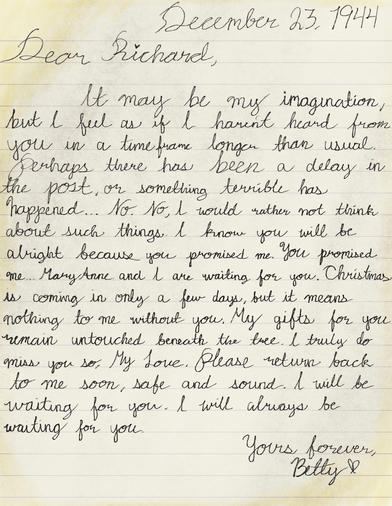

Transcription
December 23, 1944
Dear Richard,
It may be my imagination, but I feel as if I haven't heard from you in a timeframe longer than usual. Perhaps there has been a delay in the post, or something terrible has happened... No. No, I would rather not think about such things. I know you will be alright because you promised me. You promised me... Mary Anne and I are waiting for you. Christmas is coming in only a few days, but it means nothing to me without you. My gifts for you remain untouched beneath the tree. I truly do miss you so, My Love. Please return back to me soon, safe and sound. I will be waiting for you. I will always be waiting for you.
Yours forever,
Betty
Gallery
Description
Recreation of a symmetrical face showing fear and anxiety found behind the letter, made with colored ink, reminiscent of an ink blot used in psychological tests.
Back to Home - Previous Letter - Next Letter